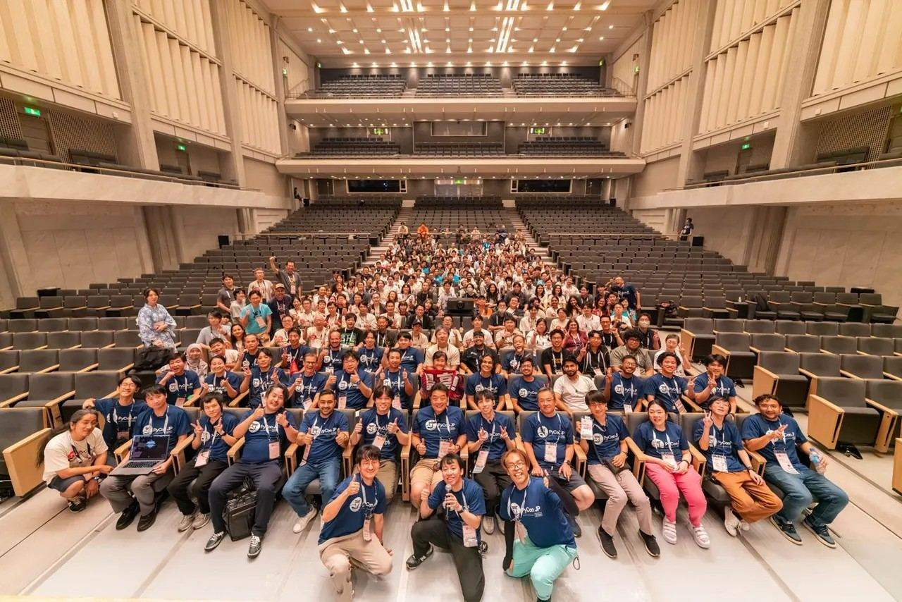

Conferences · Tech
PyCon JP 2027
- Dates
- Dates TBA
- Location
- Numazu, Japan
- Format
- In-person
- Category
- Tech
- Industry
- Programming languages / open source
- Official website
- https://2027.pycon.jp/
About
Topics: Python, data science, AI, developers.
No organiser attendance figure found on the official pages fetched 24 Nov 2026. Ranked by our estimated size tier 'small' (under 10,000 attendees/visits), a judgement from format, venue and scale, not an official number.
Sources
- Official — https://2027.pycon.jp/